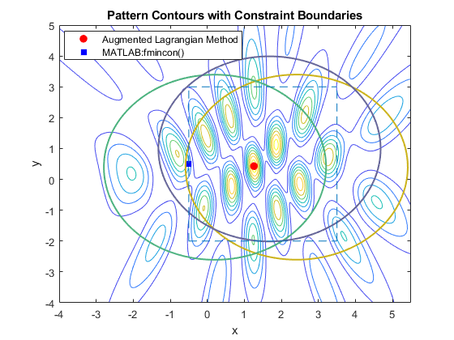

Contents
Test Augmented Lagrangian method
clear close all clc rng(4,'twister') % for reproducibility
Construct the nonlinear constrained problem
Frequency is proportional to the number of peaks
relFreqConst = 2*pi*2.5; amp = 2.2; phase = -[0; 0.54; 2.07]; numSources = 3; height = 3; % All point sources are aligned at [x_i,y_i,z] xcoords = [2.4112 0.2064 1.6787]; ycoords = [0.3957 0.3927 0.9877]; zcoords = height*ones(numSources,1); origins = [xcoords ycoords zcoords]; % Construct the objective function. % Pass additional parameters via an anonymous function: waveIntensity_x = @(x) waveIntensity(x,amp,phase, ... relFreqConst,numSources,origins); % Construct the inequality constraints ineqConsNum = 7; ineqCons = cell(ineqConsNum, 1); g1 = @(x,y) (x-xcoords(1)).^2 + (y-ycoords(1)).^2 - 9; g2 = @(x,y) (x-xcoords(2)).^2 + (y-ycoords(2)).^2 - 9; g3 = @(x,y) (x-xcoords(3)).^2 + (y-ycoords(3)).^2 - 9; ineqCons{1} = @(x)-g1(x(1), x(2)); ineqCons{2} = @(x)-g2(x(1), x(2)); ineqCons{3} = @(x)-g3(x(1), x(2)); lb = [-0.5; -2]; ub = [3.5; 3]; ineqCons{4} = @(x)(x(1) - lb(1)); ineqCons{5} = @(x)(ub(1) - x(1)); ineqCons{6} = @(x)(x(2) - lb(2)); ineqCons{7} = @(x)(ub(2) - x(2)); % Construct the equality constraints eqConsNum = 0; eqCons = {};
Setting Up and Solving the Problem with a Local Solver
Given the nonlinear constraints, we need a constrained nonlinear solver, namely, fmincon.
Let's set up a problem structure describing our optimization problem. We want to maximize the intensity function, so we negate the values returned form waveIntensity. Let's choose an arbitrary start point that happens to be near the feasible region.
For this small problem, we'll use fmincon's SQP algorithm.
% Pass additional parameters via an anonymous function: apertureConstraint_x = @(x) apertureConstraint(x,xcoords,ycoords); % Set up fmincon's options x0 = [3 -1]; opts = optimoptions('fmincon','Algorithm','sqp'); problem = createOptimProblem('fmincon','objective', ... @(x) -waveIntensity_x(x),'x0',x0,'lb',lb,'ub',ub, ... 'nonlcon',apertureConstraint_x,'options',opts); % Call fmincon [xlocal,fvallocal] = fmincon(problem)
Local minimum found that satisfies the constraints. Optimization completed because the objective function is non-decreasing in feasible directions, to within the default value of the optimality tolerance, and constraints are satisfied to within the default value of the constraint tolerance. xlocal = -0.5000 0.4945 fvallocal = -1.4438
Initial algorithm parameters
nvars = 2; w = ones(ineqConsNum, 1).*1.3; v = ones(eqConsNum, 1).*1.3; sigma = 3; epsilon = 1e-6; alpha = 1.3; beta = 0.5; maxIter = 1000;
Run the test
Transform the maximum objective to the minimum objective
objFcn = @(x)-waveIntensity_x(x); % The initial estimate of the solution. x0 = [0.5; 0.5]; [x, fval] = ALM_alg(objFcn, x0, nvars, ... eqCons, eqConsNum, ineqCons, ineqConsNum, w, v, sigma, ... epsilon, alpha, beta, lb, ub, maxIter)
x =
1.2592 0.4284
fval =
-4.3702
Compare the methods
domain = [-4 5.5 -4 5]; [X,Y] = meshgrid(domain(1):0.035:domain(2),... domain(3):0.035:domain(4)); % Compute the intensity over the grid Z = arrayfun(@(x,y) waveIntensity_x([x y]),X,Y); % Visualize the contours of our interference surface figure contour(X,Y,Z); hold on % Plot PSO results using a circle marker P1 = scatter(x(1), x(2), 'o', ... 'MarkerFaceColor', 'r', 'MarkerEdgeColor',[1 0 0],'LineWidth',1.25); P2 = scatter(xlocal(1), xlocal(2), 's', ... 'MarkerFaceColor', 'b', 'MarkerEdgeColor',[0 0 1],'LineWidth',1.25); % Plot constraints h1 = ezplot(g1,domain); h1.Color = [0.8 0.7 0.1]; % yellow h1.LineWidth = 1.5; h2 = ezplot(g2,domain); h2.Color = [0.3 0.7 0.5]; % green h2.LineWidth = 1.5; h3 = ezplot(g3,domain); h3.Color = [0.4 0.4 0.6]; % blue h3.LineWidth = 1.5; % Plot bounds line([lb(1) lb(1)],[lb(2) ub(2)],'LineStyle','--') line([ub(1) ub(1)],[lb(2) ub(2)],'LineStyle','--') line([lb(1) ub(1)],[lb(2) lb(2)],'LineStyle','--') line([lb(1) ub(1)],[ub(2) ub(2)],'LineStyle','--') axis(domain); legend([P1, P2],{'Augmented Lagrangian Method', 'MATLAB:fmincon()'}, 'Location','best'); title('Pattern Contours with Constraint Boundaries')